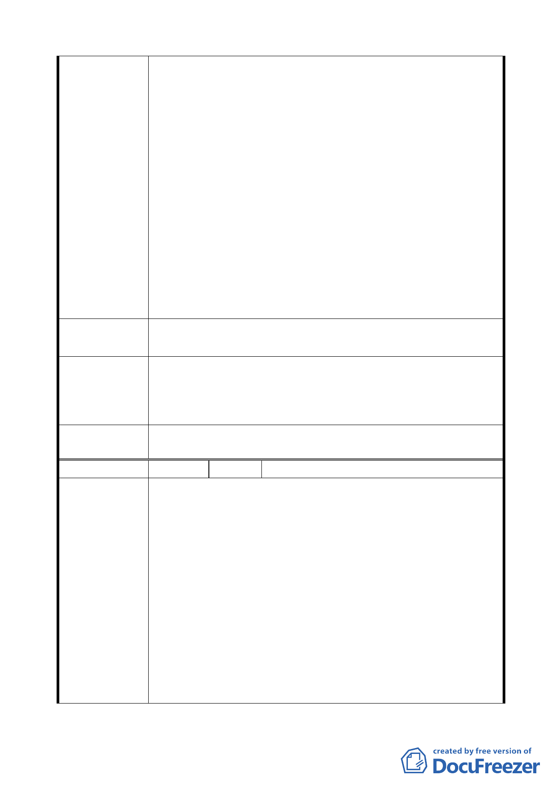

等悲劇；市府應體恤平民百姓，再如此景氣低迷之際，不
要犧牲弱勢族群。
2.拆遷無法達到美化效果，就地更新住宅才能美化周邊景觀。
3.國際觀：如需配合花博之國際盛會強制拆遷，市府應協助
住戶從優補償，事先妥善安排搬遷與安置事宜，方得贏得
讚賞與嘉言。
4.交通廣場不應設置於圓山捷運站西側：玉門街之交通廣場
範圍廣大，尤其中山足球場地下及地上停車場容量大，未
經妥善運用。此區不應設為交通廣場。
5.鐵路局懷舊觀光區：捷運淡水線改建後員有台鐵之文化資
產與歷史記憶皆無保留實無可惜，希望能結合現代建築科
技將捷運圓山站西側建造成全臺北市獨一無二之台鐵文化
觀光徒步區，結合餐飲為花博會贏得台灣特色之美名，為
國際盛會加分。
建 議 辦 法 原住戶配合營建商改建現代住宅，以美化捷運周邊景觀，由
原住戶興建。
本案交通廣場用地旨為提供捷運圓山站之轉運接駁工具
市府回應意見
停靠之用；為使交通廣場用地不受計畫道路(玉門街)之阻隔而
不利利用，爰基於無縫運輸的規劃理念，規劃於捷運站西側為
宜。
委員會決議
一、
二、
同編號 1 決議。
依市府回應意見辦理。
編
號8
陳情人 曹正仁
請將捷運西側之「道路及交通廣場用地」設置於捷運站東側，
不要拆屋。
1. 本住戶向鐵路局合法租用土地使用，亦按時繳交租金，絕
非不法佔用土地。現卻接獲通知即將拆屋並闢建交通停車
場，本住戶實在無法接受該項決議。
陳 情 理 由 2. 「交通廣場」之闢建，亦應開闢於捷運站東側，才屬合情
合理。捷運站東側為廣大之公園、無住戶居住、亦無地上
建築物，屬臺北市政府公園用地，闢建為「交通廣場」實
為最理想、最適當之用地。
3. 若因捷運站西側之現況景觀，有礙觀瞻，形象不佳，恐影
響國際花卉展覽之舉辦。則本人建議市府相關單位可就地
改善，加強美化及綠化工作項目，即可使捷運站西側煥然
-8-